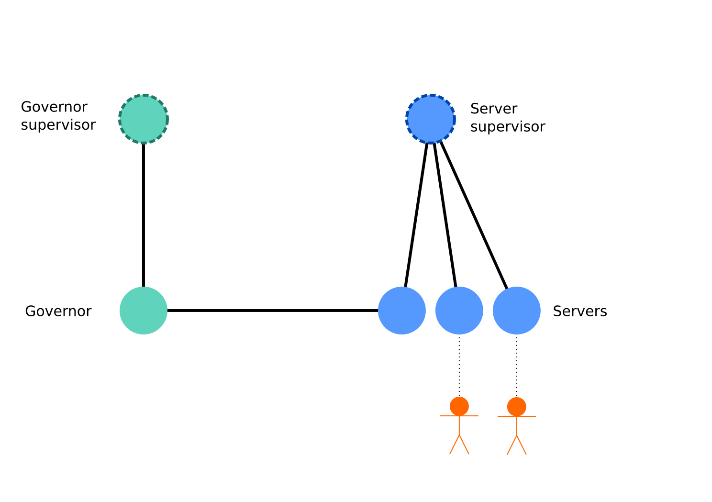

Building a webserver in Elixir
This talk explores the virtues of erlang processes. A demonstration of how to work with processes in Elixir is given. Finally I discuss a real world example, constructing my webserver Ace.
I gave this talk for the Elixir London meetup group.